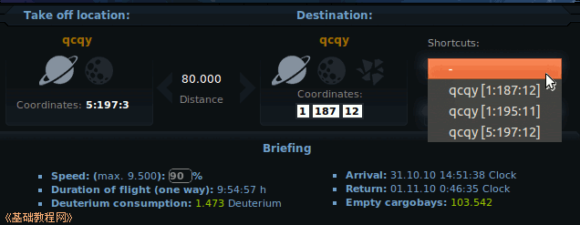
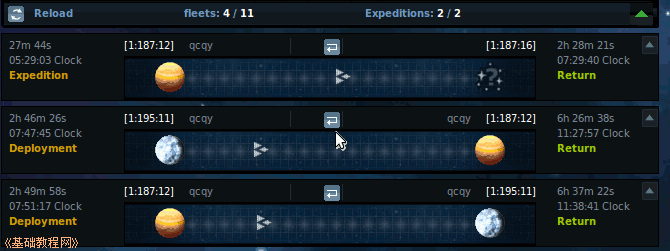
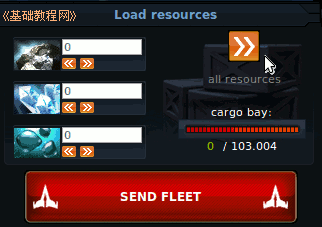
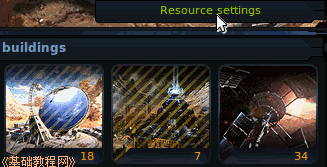
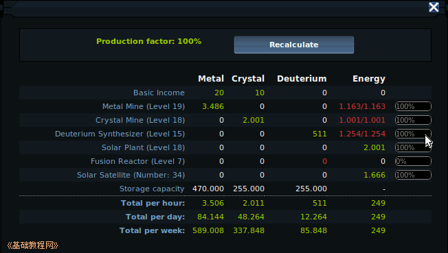
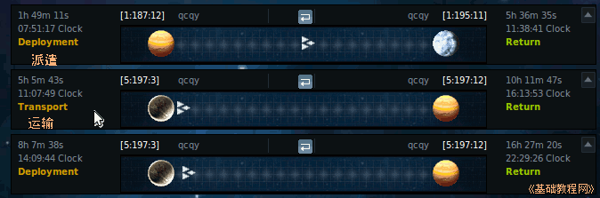
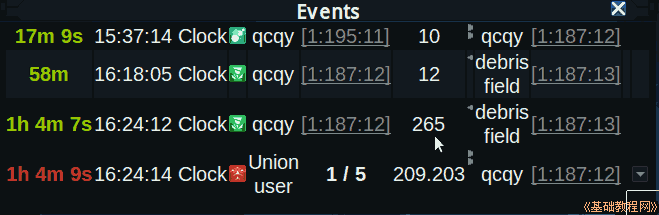

Ogame 银河帝国游戏新手入门
作者：TeliuTe 来源：基础教程网
为了防止自己离开始被别人攻击，可以将星球上的资源装入飞船运走，正在航行的飞船是不受攻击的(也称FS或舰队保护)；
1）进入 http://ogame.org，点右上角红色的“Login”登录；
2）在出来的登录框中，依次选择自己的星球，输入用户名、密码后点“Login”登录；

3）在左侧选“Fleet”舰队，选好飞船数量后，选择一个自己的其他星球，调整好速度百分比，让舰队到达时自己已经上线了，回收废墟的舰队要安全一些；

4）如果选择是别人的星球，在自己上线以后，要点舰队列表中的“召回”图标，飞船按原路返回速度也是原来的；

5）当别人攻击自己的星球时，如果打不过他，可以把自己的资源全部运走，没有资源一般是不会受到攻击；

6）在资源里点“Resource Settings”设置，将能源调整为0，从而关闭所有资源生产，等攻击过后再回来打开，
建设和升级科技可以取消，也可以用来暂存资源，而造船厂和防御的不能取消，可以用来消耗资源；

7）资源设置还可以在电能不足时，调整各个资源的生产速度，红色是消耗能量，绿色是生产的能量；

8）运输任务到达后，舰队还要返回，派遣任务舰队将留在目的地，一个是双向，一个是单向的；

9）需要注意，资源不要放在一个舰队中，以免返回时被月阵扫到后追秒，分开运输可以避免一个篮子的鸡蛋全部丢失；

本节学习了舰队保护的基本操作，如果你成功地完成了练习，请继续学习下一课内容；
本教程由86团学校TeliuTe制作|著作权所有
基础教程网：http://teliute.org/
美丽的校园……
转载和引用本站内容，请保留版权信息和本站链接。